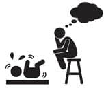

Tam bir macera: İlaç içirme…
“Ona ilaç vereceğinizi söyleyin, sonra 45 derecelik bir açıyla tutun, kaşığı ağzının yanından verin, ilacın arkasından su içirin ve ilacını içtiği için teşekkür edin.” Ooollduuuu canım! Kimden duydun yavrum sen bunu? Hadi bir kere dene, sonra gel beni dinle.
Kural 1: Doktor ilacı yazdı, hemen sor: Şurup mu bu? Evet, şurup derse; iğnesi, fitili yok mu, diye sor. Varsa hemen değiştirsin. Yoksa sor bakalım meyve suyunun içine katılıyor muymuş?
Kural 2: Çocuğa ilaç vereceğini falan söyleme. Yanına masumca yaklaş, güler yüz göster, oyun oynuyormuş gibi. İlaç kutusunu sakın, asla, kesinlikle gösterme. (Yanlış, biz de biliyoruz. Kim ister çocuğunu kandırmayı? Şöyle düşün, bunlar büyüyecek, yüzümüze gülüp arkamızdan kim bilir neler çevirecek. Eee her şey karşılıklı, kozlar elindeyken kullan gitsin.)
Kural 3: Sımsıkı kucağına al ya da bir battaniye yardımıyla kundakla. Kolunu, bacağını oynatamasın. Kafasını tut ve kaşığı ağzına daya. Ya da enjektörle ver, o daha güzel, dökülmüyor. Enjektör ağzına girdiği anda sık gitsin. Ve hemen çenesini kapat, yuttuğundan emin olunca, su biberonunu daya. (Enjektör iğnesiz haa, aman diyim!)
Kural 4: Başka numaralar dene. Mesela çikolata kavanozu. Bir kaşık çikolata verdin, kaşık kavanozun içinden çıktı, çocuk bunu gördü. İkinci kaşığın içine şurubu koy, gene kavanozun içinden çıksın ve heyecanla ağzını açsın. Tükürmez merak etme, hâlâ ağzında çikolata tadı var. Saçmalama, sahtekar, gaddar falan değilsin. Akıllı olsun, doğru düzgün içsin o zaman ilaçlarını. Senin suçun ne?
Kural 5: Hiçbir zaman yumuşama. Disipline et. Kararlı olan kazanır. İlk zamanlar kustular, ağladılar, tükürdüler… Yılmadım. Şimdi ilaç zamanı diyorum, sıraya giriyorlar. Üzgünüm, hasta olmaları zaten anne için yeterince stresli, bir de ilaç işine gerilemeyiz.